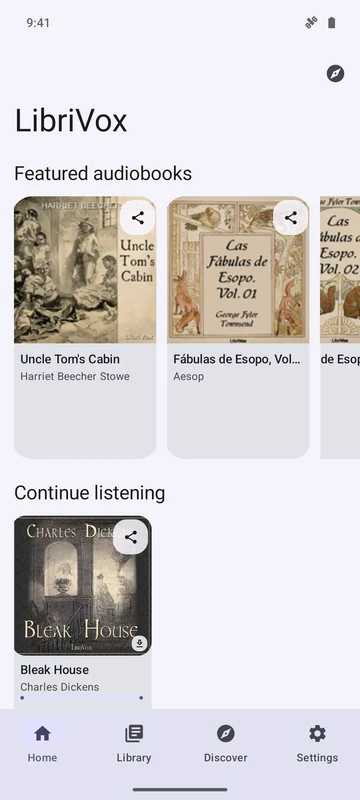
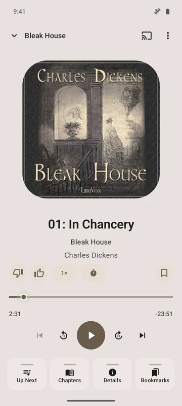
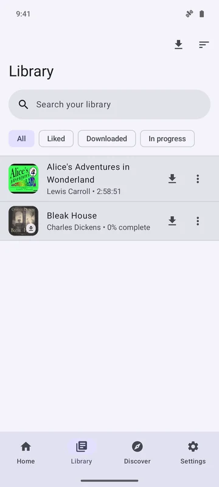
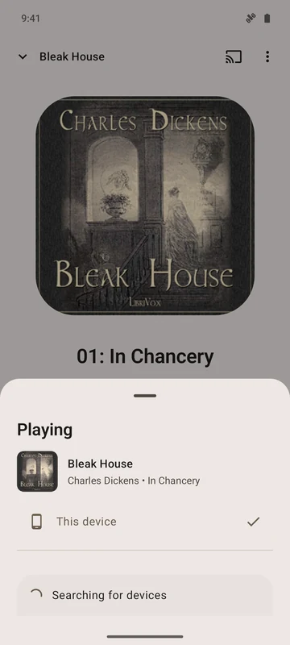

Made for audiobook listening
Listen your way.
Find something worth hearing. Make it part of your day. Keep the moments you want to come back to.
Features shown in the Android release. Native iOS app in development.
01 / Discovery
A library of possibilities.
Start with featured books or go looking for an old favorite. Choose the collections and languages that interest you.
- Search for a book or author. LibriVox search also supports chapters and readers.
- Choose your collections. Discover LibriVox, Lit2Go, and Wolne Lektury. Meet the collections.
- Look before you listen. Book details bring together descriptions, chapters, and original source links.

02 / Listening
Stay with the story.
The cover, the chapter, and your place in it. Listening controls stay close, so a small adjustment doesn’t interrupt a good book.
- Find your pace. Change playback speed and skip forward or back.
- Settle in for the night. A sleep timer stops playback after your chosen interval.
- Carry on in the background. Use Android media controls while you move between apps.

03 / Your library
Pick up the thread.
Some books take an afternoon. Others stay with you for weeks. Your library makes it easy to return.
- Save a book for later. Keep a personal collection of the stories you want to hear.
- Remember a moment. Add bookmarks with notes and come back to a specific passage.
- Keep your progress. Your library and listening data are stored on your device, without an account.

04 / Wherever you listen
Go where the day takes you.
Away from a connection or at home with a speaker. Bring the next chapter along.
- Download for the journey. Save chapters while connected and play downloaded audio offline.
- Choose a bigger sound. Cast to compatible Google Cast speakers and TVs on your local network.

A shared love of books
Free to listen.
Open source.
Good stories deserve to be heard. LibriVox Mobile is free, open-source software, built around recordings and books shared by public collections.
- No ads
- No subscriptions
- No account required
- MIT-licensed software
Meet the collections behind the stories
LibriVox volunteers bring books to life. You can also enable Lit2Go and Wolne Lektury in the app. Project Gutenberg provides linked texts. Recordings, texts, and artwork have their own source terms; public-domain status varies by country.
Explore the collections